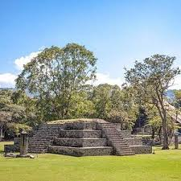

es un lugar muy tranquilo y con muchos atractivos

Es en pricipal una ciudad rural que tiene atractivos como las piramides y tiene una gran cantidad te platos tipicos y una comunidad muy sana y amable
Santa rosa de copan esta uicado al occidente de Honduras